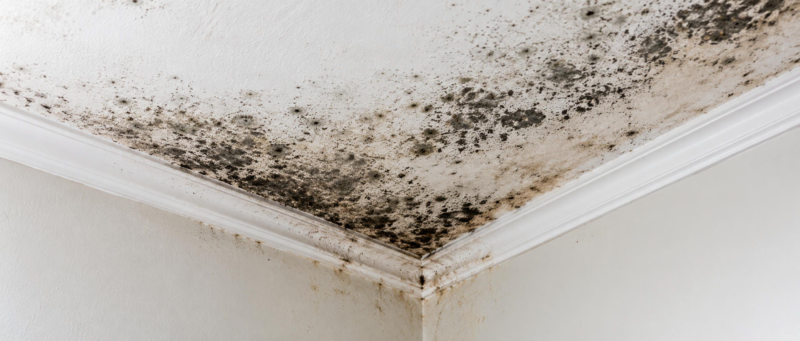

Mould Removal
Safe removal of mould from walls, ceilings, window frames and fabrics, with surfaces cleaned and treated afterwards.
Learn more →Safe removal of mould from walls, ceilings, window frames and fabrics, with surfaces cleaned and treated afterwards.
Learn more →Specialist treatment of black mould in bathrooms, kitchens, bedrooms and lofts, using containment where needed to stop spores spreading.
Learn more →Identifying whether moisture comes from condensation, leaks or damp, and advising on the right fix.
Learn more →Protective treatments applied after cleaning to slow regrowth on vulnerable surfaces in homes and businesses.
Learn more →Mould treatment after leaks, burst pipes and flooding, so affected areas dry out and stay clean.
Learn more →Mould removal for landlords, lettings agents, offices, schools and hospitality premises, scheduled around your operations.
Learn more →Mould releases tiny spores into the air. Breathing them in or touching mouldy surfaces can irritate the airways, eyes and skin, set off allergies and trigger asthma, particularly when exposure continues for weeks or months.
Cold, damp British weather, solid walls, ageing roofs and tightly sealed homes let moisture build up. Wiping visible patches removes the surface only. Lasting results come from removing the growth properly, then dealing with the source of the moisture.
Common areas include bathroom ceilings, window reveals, behind furniture on external walls, loft spaces and wardrobes.
Spores can cause coughing, wheezing and shortness of breath, and can set off asthma attacks.
Sneezing, a runny or blocked nose, itchy or watery eyes and skin rashes are common allergic reactions.
People with weakened immune systems or existing lung conditions can develop fungal infections.
Mould can irritate the eyes, nose, throat and skin even in people without allergies.
This is general information, not medical advice. See your GP or call NHS 111 if you are worried about your health.
Send your details through the form with a short description of the problem.
We inspect the affected areas and identify the cause of the moisture.
The mould is removed and surfaces are treated to prevent regrowth.
You receive practical advice on ventilation and moisture control to keep it from returning.
Mould needs moisture. Finding the source is the first step to stopping it for good.
Yes. Mould can cause allergic reactions, irritate the nose, throat, eyes and skin, and trigger asthma. People with weakened immune systems or lung disease can develop more serious problems.
Common signs are a cough, wheezing, a blocked or runny nose, sore or watery eyes, skin rashes and shortness of breath. Symptoms often ease when you spend time away from the affected home.
Colour alone does not show how harmful a mould is. Any widespread mould growth indoors is a health concern, and the priority is to remove it and fix the moisture source.
Find and fix the cause of the moisture, such as a leak or poor ventilation. Ventilate while cooking and bathing, dry washing outdoors where possible, keep a steady background heat and wipe away condensation.
Landlords are generally responsible for repairs to the structure and for damp caused by disrepair, and homes must be fit for human habitation. Report the problem to your landlord in writing. In England, Awaab's Law sets time limits for social landlords to investigate and fix hazards such as damp and mould.
See your GP or call NHS 111 if symptoms are severe, last for a long time, or affect a child, an older person or anyone with asthma, a lung condition or a weakened immune system. Call 999 in an emergency.

Send a few details and we will get back to you to arrange a survey. Photos can be sent when we reply.
Your enquiry has been sent. We will be in touch shortly.